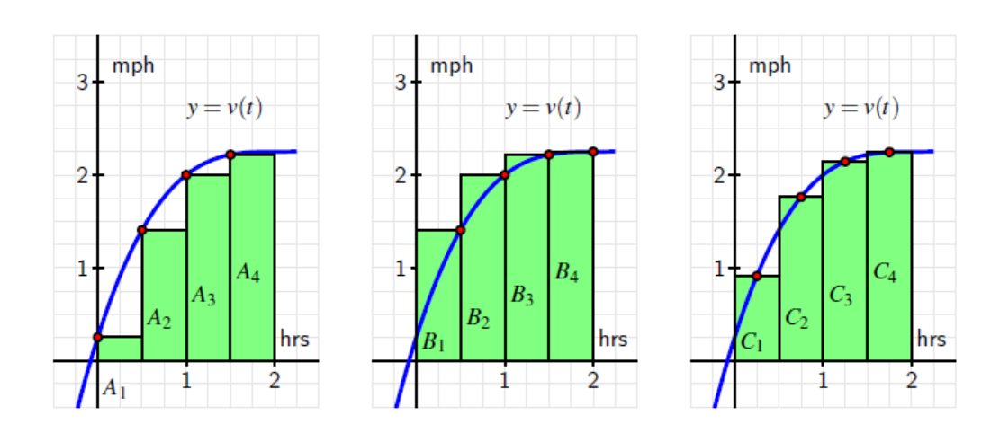
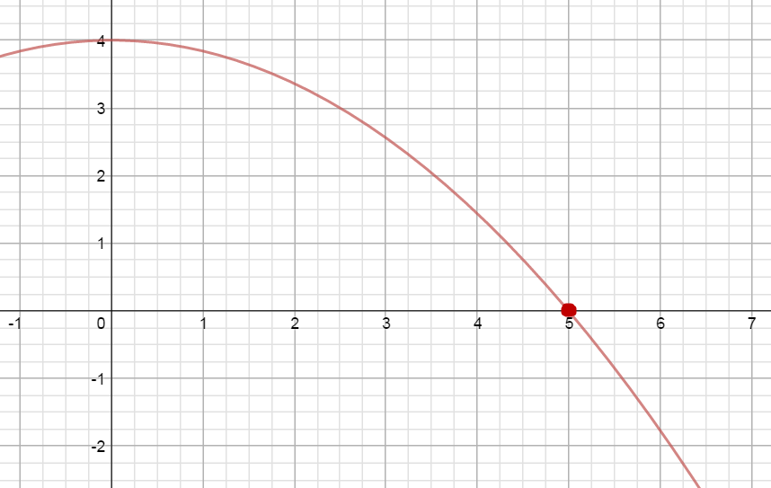

MATH 1830 Homework
Mary Monroe-Ellis
Susan Mosteller
Unit 4 Integrals
4.1 Area by Sums
Homework
-
A person walking along a straight path has her velocity in miles per hour at time t given by the function $$v(t)=0.25{{t}^{3}}-1.5{{t}^{2}}+3t+0.25,$$ for times in the interval $0\le t\le 2$. The graph of this function is also given in each of the three diagrams below.
- Estimate the area under each of the curves by summing the areas of the rectangles.
Left Rectangles: $A_1+A_2+A_3+A_4$
$.5(.25)+.5(1.4063)+.5(2)+.5(2.2188)=2.93755$
Right Rectangles: $B_1+B_2+B_3+B_4$
$.5(1.4063)+.5(2)+.5(2.2188)+.5(2.25)=3.93755$
Midpoint Rectangles: $C_1+C_2+C_3+C_4$
$.5(.91)+.5(1.7617)+.5(2.1445)+.5(2.2461)=3.53115$
- Why are the three answers different?
Each estimates the area under the curve using different size rectangles.
- Of the three estimates from part a, which do you think is the best approximation of the area under the curve?
Using midpoints gives the best approximation.
- How could you get a better approximation for the area under the curve?
We would get a better approximation if we used more rectangles.
- What does the area under the curve represent?
The area under the curve represents the total distance walked $\frac{miles}{hour}\ast hour=miles$
Source: Active Calculus by Matthew Boelkins is licensed under a Creative Commons Attribution-NonCommercial-ShareAlike 4.0 International License. Based on a work at http://scholarworks.gvsu.edu/books/10/.
- Estimate the area under each of the curves by summing the areas of the rectangles.
-
Given the function $f(x)=4-0.16{{x}^{2}}$
 Approximate the area under the curve on the interval [0, 6] using 6 right rectangles.$1[f(1)]+1[f(2)]+1[f(3)]+1[f(4)]+1[f(5)]+1[f(6)]$
$=1(3.84)+1(3.36)+1(2.56)+1(1.44)+1(0)+1(-1.76)$
$=9.44\;unit{{s}^{2}}$
-
The rate of change of per capita consumption of a certain type of cheese in the United States from 1982 through 2002 can be modeled as $$C'\left( x \right)=-0.0011{{x}^{2}}+0.02x+0.2399$$ pounds per person per year where $x$ is the number of years since 1970.

- According to the graph of $C'(x)$, when was the per capita consumption of this cheese growing and when was it declining?
Growing: 1982 to about half way thru 1996
Declining: mid-1996 through 2002
- Find the point of the graph of $C'(x)$ that corresponds to the time when the per capita consumption of this cheese, $C(x)$, was the greatest. Explain.
Per capita consumption greatest at $x=26.43$ years or sometime in 1996
- Estimate using 7 right rectangles the area lying above the x-axis and below the graph of $C'(x)$ over the interval in part a. Interpret your answer.
$2(.0343)+2(.2783)+2(.2435)+2(.1999)+2(.1475)+2(.0863)+2(.0163)=2.5522$
Total per capita consumption of this cheese grew by 2.5522 pounds per person from 1982 to mid 1996.
- Estimate using 3 right rectangles the area lying below the x-axis and above the graph of $C'(x)$ over the interval in part a. Interpret your answer.
$2(-.0625)+2(-.1501)+2(-.2465)=-.9182$
Total per capital consumption of this cheese decreased by .9182 pounds per person from mid 1996 to 2002.
- By how much did the per capita consumption of this cheese change between 1982 and 2002?
$2.5522-.9182=1.634$
Per capita consumption of this cheese grew by 1.634 pounds per person from 1982-2002.
- What information do we need to determine the per capita consumption of this cheese in 2002?
We would need the actual per capita consumption in 1981, in order to determine the per capita consumption for any other year in the domain of the function.
- According to the graph of $C'(x)$, when was the per capita consumption of this cheese growing and when was it declining?
4.2A Fundamental Theorem of Calculus
Homework
Use the Fundamental Theorem of Calculus to evaluate each of the following integrals.
-
$\begin{align}&\int_{ - 1}^5 {(1 - 2x)dx}\end{align}$
$=(x -\frac{{2{x^2}}}{2} + C)|_{ - 1}^5$
$=(x - {x^2} + C)|_{ - 1}^5$
$=(5 - 25 + C) - ( - 1 - {\left( { - 1} \right)^2} + C)$
$= (- 20 + C) - ( - 1 - 1 + C)$
$= - 20 + C + 2 - C$
$= - 18$
-
$\begin{align}&\int_0^3 {({x^3} + 2{x^2} - {e^x})dx}\end{align}$
$=(\frac{{{x^4}}}{4} - \frac{{2{x^3}}}{3} - {e^x} + C)|_0^3$
$= \left( {\frac{{{3^4}}}{4} - \frac{{2{{\left( 3 \right)}^3}}}{3} - {e^3} + C} \right) - \left( {\frac{{{0^4}}}{4} - \frac{{2{{\left( 0 \right)}^3}}}{3} - {e^0} + C} \right)$
$= \left( {20.25 + 18 - {e^3} + C} \right) - \left( { - 1 + C} \right)$
$= \left(18.164 \right) - (-1)$
$= 19.164$
-
$\begin{align}&\int_1^3 {\frac{1}{x}dx}\end{align}$
$=( \ln \left| x \right| + C)|_1^3$
$= (\ln 3 + C) - (\ln 1 + C)$
$= \ln 3 + C - \ln 1 - C$
$= \ln 3 - \ln 1$
$\approx 1.1$
-
$\begin{align}&\int_0^1\left(\sqrt x+\sqrt[3]{x^2}\right)\operatorname dx\end{align}$
$=\begin{align}&\int_0^1\left(x^\frac12+x^\frac23\right)\;\operatorname dx\end{align}$
$=( \frac{{{x^{3/2}}}}{{3/2}} + \frac{{{x^{5/3}}}}{{5/3}} + C)|_0^1$
$=(\frac{2}{3}{x^{3/2}} + \frac{3}{5}{x^{5/3}} + C)|_0^1$
$= \left[ {\frac{2}{3}{{\left( 1 \right)}^{3/2}} + \frac{3}{5}{{\left( 1 \right)}^{5/3}} + C} \right] - \left[ {\frac{2}{3}{{\left( 0 \right)}^{3/2}} + \frac{3}{5}{{\left( 0 \right)}^{5/3}} + C} \right]$
$= \frac{2}{3} + \frac{3}{5} + C - C$
$= \frac{{19}}{15} \approx 1.27$
-
$\begin{align}&\int_0^9 {(3\sqrt x + 2x + 1)dx}\end{align}$
$= \begin{align}&\int_0^9 {(3{x^{1/2}} + 2x + 1)dx}\end{align}$
$= (\frac{{3{x^{3/2}}}}{{3/2}} + \frac{{2{x^2}}}{2} + 1x + C)|_0^9$
$= (2{x^{3/2}} + {x^2} + x + C)|_0^9$
$= [2{\left( 9 \right)^{3/2}} + {9^2} + 9 + C] - [2{\left( 0 \right)^{3/2}} + {0^2} + 0 + C]$
$= [54 + 81 + 9 + C] - [C]$
$= 144 + C - C$
$= 144$
-
$\begin{align}&\int_1^e {\frac{2}{x}} dx\end{align}$
$= (2\ln \left| x \right| + C)|_1^e$
$= (2\ln \left| e \right| + C) - (2\ln \left| 1 \right| + C)$
$= (2\ln e + C) - (2(0) + C)$
$= 2\ln e + C - 0 - C$
$=2\ln e$
$= 2(1) = 2$
-
$\begin{align}&\int_1^3\left(\frac{4x^3-8x^2+2x-3}x\right)\operatorname dx\end{align}$
$=\begin{align}&\int_1^3\left(4x^2-8x+2-\frac3x\right)\;\operatorname dx\end{align}$
$=(\frac{{4{x^3}}}{3} - \frac{{8{x^2}}}{2} + 2x - 3\ln \left| x \right|+C)|_1^3$
$= [\frac{{4{{\left( 3 \right)}^3}}}{3} - 4{\left( 3 \right)^2} + 2(3) - 3\ln \left| x \right|+C] - [\frac{{4{{\left( 1 \right)}^3}}}{3} - 4{\left( 1 \right)^2} + 2(1) - 3\ln \left| 1 \right|+C]$
$= (36 - 36 + 6 - 3\ln 3+C) - (\frac{4}{3} - 4 + 2 - 0+C)$
$= 2.70 +C - ( - 0.67+C)$
$= 2.70+C + 0.67-C$
$= 3.37$
-
$\begin{align}&\int_2^8\left(5x^\frac15-2x^\frac23-2x^{-2}+\frac7x-6\right)\operatorname dx\end{align}$
$=(\frac{{5{x^{6/5}}}}{{6/5}} - \frac{{2{x^{5/3}}}}{{5/3}} - \frac{{2{x^{ - 1}}}}{{ - 1}} + 7\ln \left| x \right| - 6x+C)|_2^8$
$=(\frac{{25}}{6}{x^{6/5}} - \frac{6}{5}{x^{5/3}} + 2{x^{ - 1}} + 7\ln \left| x \right| - 6x+C)|_2^8$
$=\left[ {\frac{{25}}{6}{{\left( 8 \right)}^{6/5}} - \frac{6}{5}{{\left( 8 \right)}^{5/3}} + \frac{2}{8} + 7\ln 8 - 6(8)+C} \right] - \left[ {\frac{{25}}{6}{{\left( 2 \right)}^{6/5}} - \frac{6}{5}{{\left( 2 \right)}^{5/3}} + \frac{2}{2} + 7\ln 2 - 6(2)+C} \right]$
$= - 21.07+C - ( - 0.39+C)$
$= - 21.07+C + 0.39-C$
$= - 20.68$
-
The rate of change of annual U. S. factory sales of electronics from 1990 through 1996 can be modeled by the equation $$s\left( t \right) = - 0.23{t^3} + 2.257{t^2} - 1.51t + 42.8$$ billions of dollars per year where t is the number of years since 1990. Evaluate $\begin{align}&\int_0^6 s\left( t \right)\end{align}$ and interpret your answer.
$\begin{align}&\int_0^6 {( - 0.23{t^3} + 2.257{t^2} - 1.51t + 42.8)dt}\end{align}$
$=(\frac{{ - 0.23{t^4}}}{4} + \frac{{2.257{t^3}}}{3} - \frac{{1.51{t^2}}}{2} + 42.8t + C)|_0^6$
$=(\frac{{ - 0.23{{\left( 6 \right)}^4}}}{4} + \frac{{2.257{{\left( 6 \right)}^3}}}{3} - \frac{{1.51{{\left( 6 \right)}^2}}}{2} + 42.8(6) + C) - (0 + C)$
$= 317.604 + C - C$
$= 317.604$
U.S. factory sales of electronics from 1990 through 1996 were \$317.604 billion.
-
The rate of change of the length of the average hospital stay between 1980 and 1996 can be modeled by the equations below where t is the number of years since 1980. Determine the value of the following definite integrals and interpret your answers. Note: $s(t)$ is in days per year.
$s(t)=\begin{cases} 0.028t-0.23 & 0\leq t\leq 10 \\ -0.0408t+0.30883 & 10\lt t\leq 16 \\ \end{cases}$
- $\begin{align}&S(t)=\int_0^{10}s(t)\;dt\end{align}$
$\begin{align}&\int_0^{10} {(0.028t - 0.23)dt}\end{align}$
$= (\frac{{0.028{t^2}}}{2} - 0.23t + C)|_0^{10}$
$=[\frac{{0.028{{\left( {10} \right)}^2}}}{2} - 0.23(10) + C] - [0 - 0 + C]$
$= - 0.9 + C - C$
$= - 0.9$
The length of the average hospital stay decreased by 0.9 days from 1980-1990.
- $\begin{align}&\int_{10}^{16}s(t)\;dt\end{align}$
$\begin{align}&\int_{10}^{16} {(-0.0408t+0.30883)dt}\end{align}$
$= (\frac{{-0.0204{t^2}}}{2} + 0.30883t + C)|_{10}^{16}$
$=(\left.-0.0204t^2+0.30883t+C\right)|_{10}^{16}$
$= [ - 0.0204{\left( {16} \right)^2} + 0.30883(16) + C] - [ - 0.0204{\left( {10} \right)^2} + 0.30883(10) + C]$
$= - 0.28112 + C - 1.0483 - C$
$ = - 1.33$
The length of the average hospital stay decreased by 1.33 days from 1990 to 1996.
c. $\begin{align}&\int_0^{16} s\left( t \right)\;dt\end{align}$From the answers to a & b: $\quad - 0.9 + - 1.33 = - 2.23$
The length of the average hospital stay decreased by 2.23 days from 1980 to 1996.
- $\begin{align}&S(t)=\int_0^{10}s(t)\;dt\end{align}$
4.2B Fundamental Theorem of Calculus
Homework
Use the Fundamental Theorem of Calculus to evaluate each of the following integrals.
-
$\begin{align}&\int_{ - 1}^2 {(3{x^2} - 2x + 5)\;dx}\end{align}$
$=(\frac{{3{x^3}}}{3} - \frac{{2{x^2}}}{2} + 5x + C)|_{ - 1}^2$
$=( {x^3} - {x^2} + 5x + C)|_{ - 1}^2$
$= ({2^3} - {2^2} + 5(2) + C) - ({\left( { - 1} \right)^3} - {\left( { - 1} \right)^2} + 5( - 1) + C)$
$= (8 - 4 + 10 + C) - ( - 1 - 1 - 5 + C)$
$= 14 + C + 7 - C$
$= 21$
-
$\begin{align}&\int_0^4 {(3{e^x} - {x^2} + 3\;)dx}\end{align}$
$= (3{e^x} - \frac{{{x^3}}}{3} + 3x + C)|_0^4$
$= [3{e^4} - \frac{{{4^3}}}{3} + 3(4) + C] - [3{e^0} - 0 + 0 + C]$
$= (3{e^4} - \frac{{64}}{3} + 12 + C) - (3(1) + C)$
$= 3{e^4} - \frac{{28}}{3} + C - 3 - C$
$= 3{e^4} + \frac{{ - 37}}{3}$
$= 151.46$
-
$\begin{align}&\int_2^6 {\frac{{ - 4}}{x}\;dx}\end{align}$
$= ( - 4\ln \left| x \right| + C)|_2^6$
$= ( - 4\ln 6 + C) - ( - 4\ln 2 + C)$
$= - 4\ln 6 + C + 4\ln 2 - C$
$= - 4\ln 6 + 4\ln 2$
$\approx - 4.39$
-
$\begin{align}&\int_{ - 1}^1 {(\sqrt[3]{x} + \sqrt[5]{{{x^2}}})\;dx}\end{align}$
$\begin{align}&\int_{ - 1}^1( {{x^{1/3} + {x^{2/5}}} } )\;dx\end{align}$
$= \left(\frac{{{x^{4/3}}}}{{4/3}} + \frac{{{x^{7/5}}}}{{7/5}} + C\right)|_{ - 1}^1$
$=\left( \frac{3}{4}{x^{4/3}} + \frac{5}{7}{x^{7/5}} + C\right)|_{ - 1}^1$
$= \left(\frac{3}{4} + \frac{5}{7} + C\right) - \left(\frac{3}{4} - \frac{5}{7} + C\right)$
$= \frac{{10}}{7} \approx 1.43$
-
$\begin{align}&\int_{ - 1}^8 {(3\sqrt[3]{x} + x - 3)\;dx}\end{align}$
$\begin{align}&\int_{ - 1}^8 {(3{x^{1/3}} + x - 3)\;dx}\end{align}$
$= \left(\frac{{3{x^{4/3}}}}{{4/3}} + \frac{{{x^2}}}{2} - 3x + C\right)|_{ - 1}^8$
$= \left(\frac{9}{4}{x^{4/3}} + \frac{{{x^2}}}{2} - 3x + C\right)|_{ - 1}^8$
$= (36 + 32 - 24 + C) - (\frac{9}{4} + \frac{1}{2} + 3 + C)$
$= 44 + C - 5.75 - C$
$= 38.25$
-
$\begin{align}&\int_1^{2e} {\frac{{ - 5}}{x}\;dx}\end{align}$
$= (- 5\ln \left| x \right| + C)|_1^{2e}$
$= ( - 5\ln 2e + C) - ( - 5\ln 1 + C)$
$= - 5\ln 2e + C - (0 + C)$
$= - 5\ln 2e + C - 0 - C$
$= - 5\ln 2e$
$= - 8.466$
-
$\begin{align}&\int_1^4\left(\frac{4x^3-8x^2+2x-3}{2x^2}\right)\operatorname dx\end{align}$
$\begin{align}&\int_1^4 \left(2x - 4 + \frac{1}{x} - \frac{3}{2}{x^{ - 2}}\right)\;dx\end{align}$
$\left({x^2} - 4x + \ln \left| x \right| + \frac{3}{{2x}}+C\right)|_1^4$
$\left[ {{{\left( 4 \right)}^2} - 4(4) + \ln 4 + \frac{3}{8}}+C \right] - \left[ {{{\left( 1 \right)}^2} - 4(1) + \ln 1 + \frac{3}{{2(1)}}}+C \right]$
$\left( {16 - 16 + \ln 4 + \frac{3}{8}}+C \right) - \left( {1 - 4 + 0 + \frac{3}{2}}+C \right)$
$= 1.76+C - ( - 1.5+C)$
$= 1.76+C + 1.5-C$
$= 3.26$
-
$\begin{align}&\int_1^4 {(\frac{5}{{{x^3}}} - \frac{2}{x} + \frac{3}{{\sqrt x }} + x + 1)\;dx}\end{align}$
$\begin{align}&\int_1^4 {(5{x^{ - 3}} - \frac{2}{x} + 3{x^{-1/2}} + x + 1)\;dx}\end{align}$
$= \left(\frac{{5{x^{ - 2}}}}{{ - 2}} - 2\ln \left| x \right| + \frac{{3{x^{1/2}}}}{{1/2}} + \frac{{{x^2}}}{2} + x + C\right)|_1^4$
$= \left(\frac{{ - 5}}{{2{x^2}}} - 2\ln \left| x \right| + 6\sqrt x + \frac{{{x^2}}}{2} + x + C\right)|_1^4$
$= \left( {\frac{{ - 5}}{{2(16)}} - 2\ln 4 + 6\sqrt 4 + \frac{{16}}{2} + 4 + C} \right) - \left( {\frac{{ - 5}}{2} + 0 + 6 + \frac{1}{2} + 1 + C} \right)$
$= (23.84375 - 2\ln 4 + C) - (5 + C)$
$\approx 21.071 + C - 5 - C$
$\approx 16.071$
-
The rate of change in the number of consumer complaints to the U. S. Department of Transportation about baggage on U. S. airlines between 1989 and 2000 can be modeled by the function $$B'\left( x \right) = 55.15{x^2} - 524.09x + 1768.65$$ complaints per year where x is the number of years after 1989. (Source: Based on data from Statistical Abstract, 2001)
- Find the average number of baggage complaints during the period from 1990 and 1996.
$1989:x = 0$
$1990:x = 1$
$1996:x = 7$
$\frac{1}{{7 - 1}}\begin{align}&\int_1^7 {(55.15{x^2} - 524.09x + 1768.65)\;dx}\end{align}$
$= \frac{1}{6}[\frac{{55.15{x^3}}}{3} - \frac{{524.09{x^2}}}{2} + 1768.65x]_1^7$
$= \frac{1}{6}[5845.83 - 1524.99]$
$= \frac{1}{6}(4320.84)$
$= 720.14$
On average there were 720.14 bag complaints per year from 1990 to 1996
- Sketch a graph of $B\left( x \right)$ from 1990 to 1996 and draw the horizontal line representing the average value. When were the number of complaints closest to the average value found in part a?

The number of complaints was closest to the average of 720.14 in the following two years: Year 2.9 (end of 1991) and Year 6.64 (mid 1995).
- Find the average number of baggage complaints during the period from 1990 and 1996.
-
Square Pharmaceuticals Limited, the flagship company of Square Group, is a pharmaceutical company in Bangladesh. Taka is the Bangladeshi currency (\$1=77.88 taka).
Monthly revenue is given by the function $R(t)=400-20t^\frac12.$
Monthly cost is given by the function $C(t)=40-40t^\frac12.$
Find the net profit for Square Pharmaceuticals from January 2011 through December 2013.
Source: https://www.academia.edu/7825243/Application_of_Mathematics_in_Real_Life_Business$P(t) = R(t) - C(t)$
$P(t) = (400 - 20{t^{1/2}}) - (40 - 40{t^{1/2}})$
$\begin{align}&\int_0^{36} \left(360 +20{t^{1/2}}\right)\;dt\end{align}$
$\left(360t + \frac{{20{t^{3/2}}}}{{3/2}} + C\right)|_0^{36}$
$\left(360t +\frac{40}{3}{t^{3/2}} + C\right)|_0^{36}$
$15840 - 0$
The total profit for 2011-2013 is $15,840$ taka.
4.3 Indefinite Integrals
Homework
Integrate the following.
-
$\begin{align}&\int {(2{x^4} - 5{x^3} - {x^2} + 5x - 8)\;dx}\end{align}$
$ = \frac{{2{x^5}}}{5} - \frac{{5{x^4}}}{4} - \frac{{{x^3}}}{3} + \frac{{5{x^2}}}{2} - 8x + C$
-
$\begin{align}&\int {\,(3{x^{ - 2}} - 4{x^{ - 3}} + 8)\;dx}\end{align}$
$= \frac{{3{x^{ - 1}}}}{{ - 1}} - \frac{{4{x^{ - 2}}}}{{ - 2}} + 8x + C$
$= - 3{x^{ - 1}} + 2{x^{ - 2}} + 8x + C$
-
$\begin{align}&\int {(4{x^{ - 1}} + 3x - 2{e^x} - 1)\;dx}\end{align}$
$ = 4\ln \left| x \right| + \frac{{3{x^2}}}{2} - 2{e^x} - x + C$
-
$\begin{align}&\int {\left( {2\sqrt[3]{{{x^2}}} - 4\sqrt x + \frac{3}{{{x^2}}} - \frac{5}{x} + 2} \right)} \;dx\end{align}$
$\begin{align}&\int\left(2x^\frac23-4x^\frac12+3x^{-2}-\frac5x+2\right)\;dx \end{align}$
$ = \frac{{2{x^{5/3}}}}{{5/3}} - \frac{{4{x^{3/2}}}}{{3/2}} + \frac{{3{x^{ - 1}}}}{{ - 1}} - 5\ln \left| x \right| + 2x + C$
$= \frac{6}{5}{x^{5/3}} - \frac{8}{3}{x^{3/2}} - 3{x^{ - 1}} - 5\ln \left| x \right| + 2x + C$
-
$\begin{align}&\int {\left( {{e^x} + \frac{2}{x} - \frac{3}{{{x^2}}} - \frac{4}{{\sqrt x }} + 5} \right)\;dx}\end{align}$
$\begin{align}&\int\left(e^x+\frac2x-3x^{-2}-4x^{-\frac12}+5\right)\;dx\end{align}$
$ = {e^x} + 2\ln \left| x \right| - \frac{{3{x^{ - 1}}}}{{ - 1}} - \frac{{4{x^{1/2}}}}{{1/2}} + 5x + C$
$= {e^x} + 2\ln \left| x \right| + \frac{3}{x} - 8\sqrt x + 5x + C$
-
$\begin{align}&\int {\frac{{2{x^2} + 6x - 7}}{x}} \;dx\end{align}$
$\begin{align}&\int {(2x + 6 - \frac{7}{x}} )dx\end{align}$
$= \frac{{2{x^2}}}{2} + 6x - 7\ln \left| x \right| + C$
$= {x^2} + 6x - 7\ln \left| x \right| + C$
-
$\begin{align}&\int {\,\frac{{4{x^4} - 5{x^3} + 6{x^2} - 7x}}{{{x^2}}}} \;dx\end{align}$
$\begin{align}&\int {(4{x^2} - 5x + 6 - \frac{7}{x}} )dx\end{align}$
$= \frac{{4{x^3}}}{3} - \frac{{5{x^2}}}{2} + 6x - 7\ln \left| x \right| + C$
-
The MORF dress in one dress with no buttons, zippers, Velcro, front or back that can be worn 24 different ways. After completing a successful Kickstarter campaign, the company found that the marginal cost for making the dress can be modeled by the function $C'(x) = {x^2} - 16x + 70$ dollars per dress where x is the number of dresses produced.

- Find the cost function for the MORF dress.
$C(x) = \frac{{{x^3}}}{3} - \frac{{16{x^2}}}{2} + 70x + C$
$C(x) = \frac{{{x^3}}}{3} - 8{x^2} + 70x + C$
- If $C(0) = 500$ find the total cost for producing 20 dresses.
$\frac{0}{3} - 8(0) + 70(0) + C = 500$
$0 + C = 500$
$C = 500$
$C(x) = \frac{{{x^3}}}{3} - 8{x^2} + 70x + 500$
$C(20) = \frac{{8000}}{3} - 3200 + 1400 + 500$
$C(20) = \$ 1366.67$
- What is the fixed cost and what is the total variable cost of 20 dresses?
fixed cost $= \$ 500$ to produce 20 dresses
variable cost $= \$ 866.67$ to produce 20 dresses
- Find the cost function for the MORF dress.
-
Suppose that when it is t years old, a particular industrial machine generates revenue at the rate $R'(t) = 5000 - 20{t^2}$ dollars per year.
The operating and servicing costs related to the machine accumulate at the rate of $C'(t) = 2000 + 10{t^2}$ dollars per year.
Find the profit function given that when the machine is first purchased no profit has been generated from it.
$R'(t) = 5000 - 20{t^2}$
$C'(t) = 2000 + 10{t^2}$
$P'(t) = R'(t) - C'(t)$
$P'(t) = (5000 - 20{t^2}) - (2000 + 10{t^2})$
$= 5000 - 20{t^2} - 2000 - 10{t^2}$
$= 3000 - 30{t^2}$
$P(t) = \begin{align}&\int {(3000 - 30{t^2})dt}\end{align}$
$P(t) = 3000t - \frac{{30{t^3}}}{3} + C$
$P(t) = 3000t - 10{t^3} + C$
$3000(0) - 10{\left( 0 \right)^3} + C = 0$
$0 + C = 0$
$C = 0$
$P(t) = 3000t - 10{t^3}$
-
The rate of change for the lower limit for the top 5% of earners for all households in the United States from 2000 to 2014 can be modeled by $$I'(t) = 38.58{t^2} - 523.56t + 5416.05$$ where $t$ is the number of years after 2000.
- Find a general antiderivative for the lower limit for the top 5% of earners.
$I'(t) = 38.58{t^2} - 523.56t + 5416.05$
$\begin{align}&\int {(38.85{t^2} - 523.56t + 5416.05)dt}\end{align}$
$\frac{{38.58{t^3}}}{3} - \frac{{523.56{t^2}}}{2} + 5416.05t + C$
$I(t) = 12.86{t^3} - 261.78{t^2} + 5416.05t + C$
- Find a specific antiderivative given that in 2000 the lower limit for the top 5% of earners was $145,220.
$I(0) = 0 = 0 + 0 + C = 145220$
$C = 145,220$
$I(t) = 12.86{t^3} - 261.78{t^2} + 5416.05t + 145,220$
- What will the lower limit for the top 5% of earners be in 2015 using this model?
$I(15) = 12.86{(15)^3} - 261.78{(15)^2} + 5416.05(15) + 145,220$
$I(15) = \$ 210,963$
The lower limit on income for the top 5% of earners in 2015 will be \$210,963.
- Find a general antiderivative for the lower limit for the top 5% of earners.
4.4A Integration by Substitution
Homework
Integrate the following.
-
$\begin{align}&\int {{{\left( {5x + 4} \right)}^2}\;dx}\end{align}$
$u = 5x + 4$
$du = 5 \;dx$
$\frac{1}{5}\begin{align}&\int {{{\left( {5x + 4} \right)}^2}\cdot5\;dx}\end{align}$
$\frac{1}{5}\begin{align}&\int {{u^2}\;du}\end{align}$
$\frac{1}{5}\cdot\frac{{{u^3}}}{3} + C$
$\frac{1}{{15}}{\left( {5x + 4} \right)^3} + C$
-
$\begin{align}&\int{{{\left( 4x-5 \right)}^{1/2}}}\;dx\end{align}$
$u=4x-5$
$du=4\;dx$
$\frac{1}{4}\begin{align}&\int{{{\left( 4x-5 \right)}^{1/2}}}\;dx\end{align}$
$\begin{align}&\frac14\int {u^{1/2}}\;du\end{align}$
$\frac{1}{4}\cdot\frac{{{u}^{3/2}}}{3/2}+C$
$\frac{1}{4}\cdot\frac{2}{3}{{u}^{3/2}}+C$
$\frac{1}{6}{{\left( 4x-5 \right)}^{3/2}}+C$
-
$\begin{align}&\int {{{\left( {{x^3} + {x^2}} \right)}^{1/2}}} (3{x^2} + 2x)\;dx\end{align}$
$u = {x^3} + {x^2}$
$du = \left(3{x^2} + 2x\right)\;dx$
$\begin{align}&\int u^{1/2}\;du\end{align}$
$\frac{u^{3/2}}{3/2}+C$
$\frac23u^{3/2}+C$
$\frac23\left(x^3+x^2\right)^\frac32+C$
-
$\begin{align}&{{\int{\left( 1+\frac{1}{t} \right)}}^{3}}\frac{1}{{{t}^{2}}}\;dt\end{align}$
$u = 1 + \frac{1}{t}$
$du = -\frac{1}{{{t^2}}}\;dt$
$ \begin{align}&-\int\left(1+\frac1t\right)^3\cdot\left(-\frac1{t^2}\right)\;dt\end{align}$
$ - \begin{align}&\int {{u^3}\;du}\end{align}$
$\frac{{ - {u^4}}}{4} + C$
$- \frac{1}{4}{\left( {1 + \frac{1}{t}} \right)^4} + C$
-
$\begin{align}&\int {\frac{{2x + 2}}{{{x^2} + 2x + 1}}} \;dx\end{align}$
$u = {x^2} + 2x + 1$
$du = \left(2x + 2\right)\;dx$
$\begin{align}&\int {\frac{1}{u}} \;du\end{align}$
$\ln \left| u \right| + C$
$\ln \left| {{x^2} + 2x + 1} \right| + C$
-
$\begin{align}&\int {x{e^{{x^2}}}\;dx}\end{align}$
$u = {x^2}$
$du = 2x\;dx$
$\begin{align}&\int {{e^{{x^2}}}x\;dx}\end{align}$
$\frac{1}{2}\begin{align}&\int {{e^{{x^2}}}2x\;dx}\end{align}$
$\frac{1}{2}\begin{align}&\int {{e^u}\;du}\end{align}$
$\frac{1}{2}{e^u} + C$
$\frac{1}{2}{e^{{x^2}}} + C$
-
$\begin{align}&\int {\frac{{{e^{\sqrt x }}}}{{\sqrt x }}} \;dx\end{align}$
$u=\sqrt x=x^{1/2}$
$du=\frac12x^{-1/2}\;dx$
$du = \frac{1}{{2\sqrt x }}\;dx$
$2\begin{align}&\int\left(e^\sqrt x\right)\cdot\left(\frac1{2\sqrt x}\right)\;dx\end{align}$
$2\begin{align}&\int {{e^u}\;du}\end{align}$
$2{e^u} + C$
$2{e^{\sqrt x }} + C$
-
$\begin{align}&\int {\frac{{{e^x}}}{{4 - {e^x}}}\;} dx\end{align}$
$u = 4 - {e^x}$
$du = - {e^x}\;dx$
$ - \begin{align}&\int {\frac{{ - {e^x}}}{{4 - {e^x}}}\;dx}\end{align}$
$- \begin{align}&\int {\frac{1}{u}\;du}\end{align}$
$ - \ln \left| u \right| + C$
$- \ln \left| {4 - {e^x}} \right| + C$
-
$\begin{align}&\int{\frac{1}{2x\ln x}}\;dx\end{align}$
$u=\ln x$
$du=\frac{1}{x}\;dx$
$\begin{align}&\int{\frac{1}{2x\ln x}}\;dx\end{align}$
$\frac{1}{2}\begin{align}&\int{\frac{1}{u}}\; du\end{align}$
$\frac12\ln\left|u\right|+C$
$ \frac{1}{2}\ln \left| \ln x \right|+C$
-
$\begin{align}&\int {\frac{{{{\left( {\ln x} \right)}^5}}}{x}}\; dx\end{align}$
$u = \ln x$
$du = \frac{1}{x}\;dx$
$\begin{align}&\int {{{\left( {\ln x} \right)}^5}} \frac{1}{x}\;dx\end{align}$
$\begin{align}&\int {{u^5}\;du}\end{align}$
$\frac{{{u^6}}}{6} + C$
${\frac{{\left( {\ln x} \right)}}{6}^6} + C$
-
The population growth rate of a certain bacteria can be modeled by $$\frac{dP}{dt}=1000{{e}^{{}^{t}/{}_{3}}}$$ where $t$ is measured in hours. What is the population after 3 hours?
$\frac{dP}{dt}=1000{{e}^{t/3}}$
$P(t)=\begin{align}&\int_{0}^{3}{1000{{e}^{t/3}}}\;dt\end{align}$
$u=\frac{t}{3}$
$du=\frac{1}{3}dt$
$P(t)=3\begin{align}&\int_{0}^{3}{1000{{e}^{t/3}}}\cdot\frac{1}{3}\;dt\end{align}$
$=3\begin{align}&\int_{t=0}^{t=3}{1000{{e}^{u}}}\;du\end{align}$
$=3000{{e}^{u}}│_{t=0}^{t=3}$
$=3000{{e}^{t/3}}│ _{0}^{3}$
$=3000{{e}^{3/3}}-3000{{e}^{0/3}}$
$=3000e-3000(1)$
$\approx 5155$
The population will be $5155$ bacteria at the end of 3 hours.
-
The annual marginal revenue for the sale of $x$ iPhones can be modeled by $$R'(x)=20x+700+\frac{200}{x+5}\quad \quad R(0)=0,$$ where $R(x)$ is revenue in dollars and x is number of iPhones in thousands.
- Find the revenue function.
$R(x)=\begin{align}&\int R'(x)\;dx\end{align}$
$R(x)=\begin{align}&\int\left(20x+700+\frac{200}{x+5}\right)\;dx\end{align}$
$R(x)=\begin{align}&\int\left(20x+700\right)\;dx\;+\int\frac{200}{x+5}\;dx\end{align}$
$u=x+5$
$du=1\;dx$
$R(x)=\begin{align}&\int\left(20x+700\right)\;dx\;+\;200\int\frac1u\;du\end{align}$
$R(x)=\frac{20x^2}2+700x+200\ln\left|x+5\right|+C$
$R(x)=10x^2+700x+200\ln\left|x+5\right|+C$
$R(0)=0$
$10(0)^2+700(0)+200\ln\left|0+5\right|+C=0$
$200\ln\left|5\right|+C=0$
$321.89+C=0$
$C=-321.89$
$R(x)=10x^2+700x+200ln\left|x+5\right|-321.89$
- Find the revenue from the sale of 5 million iPhones.
5,000,000 iPhones =5000 thousand iPhones
$x=5000$
$R(500)=10(5000)^2+700(5000)+200\ln(5005)-321.89$
$R(5000)=253,501,381.70$
The revenue from the sale of 5 million iPhones is \$253,501,381.70.
- Find the revenue function.
-
A city’s population is expected to grow at the rate $$P'(t)=\frac{126{{e}^{16t}}}{1+{{e}^{16t}}},$$ where $t$ is the number of months from now when the population is 30,000.
- Find the function for the city’s population.
$\begin{align}&\int\frac{126e^{16t}}{1+e^{16t}}\;dt\end{align}$
$u=1+e^{16t}$
$du=16e^{16t}\;dt$
$\left(\frac{126}{16}\right)\begin{align}&\int\frac{16e^{16t}}{1+e^{16t}}\;dt\end{align}\\$
$7.875\begin{align}&\int\frac1u\;du\end{align}$
$P(t)=7.875\ln\left|1+e^{16t}\right|+C$
$7.875\ln\left|1+e^0\right|+C=30,000$
$7.875\ln(2)+C=30,000$
$5.46+C=30,000$
$C=29,994.54$
$P(t)=7.875ln\left|1+e^{16t}\right|+29,994.54$
- Find the population 12 months from now.
$P(t)=7.875\ln\left|1+e^{16t}\right|+29,994.54$
$P(12)=7.875ln\left|1+e^{16(12)}\right|+29,994.54$
$P(12)=31,506.54$
The population 12 months from now will be approximately 31,506.54 people.
- Approximate the increase in the population from month 6 to month 12.
$\begin{array}{l}\int_6^{12}\frac{126}{1+e^{16t}}\;dt\end{array}$
$7.875ln\left|1+e^{16t}\right|_6^{12}$
$1512-756=756$
The population increased by approximately 756 people from month 6 to month 12.
- Find the function for the city’s population.
4.4B Integration by Substitution
Homework
Integrate the following.
-
$\begin{align}&\int {3{t^2}} {\left( {{t^3} + 4} \right)^5}\;dt\end{align}$
$u = {t^3} + 4$
$du = 3{t^2}\;dt$
$\begin{align}&\int {{{\left( {{t^3} + 4} \right)}^5}} 3{t^2}\;dt\end{align}$
$\begin{align}&\int {{u^5}}\; du\end{align}$
$\frac{{{u^6}}}{6} + C$
$\frac{\left(t^3+4\right)^6}6+C$
-
$\begin{align}&\int{{{x}^{2}}}{{\left( {{x}^{3}}+4 \right)}^{-1/2}}\;dx\end{align}$
$u={{x}^{3}}+4$
$du=3{{x}^{2}}\; dx$
$\begin{align}&{{\int{\left( {{x}^{3}}+4 \right)}}^{-1/2}}\cdot{{x}^{2}}\;dx\end{align}$
$\frac{1}{3}\begin{align}&\int{{{\left( {{x}^{3}}+4 \right)}^{-1/2}}\cdot}\;3{{x}^{2}}\;dx\end{align}$
$\frac{1}{3}\begin{align}&\int{{{u}^{-1/2}}}\;du\end{align}$
$\frac{1}{3}\cdot\frac{{{u}^{1/2}}}{1/2}+C$
$\frac{1}{3}\cdot \frac{2}{1}{{u}^{\frac{1}{2}}}+C$
$\frac{2}{3}{{u}^{1/2}}+C$
$\frac{2}{3}{{\left( {{x}^{3}}+4 \right)}^{1/2}}+C$
-
$\begin{align}&\int{\frac{{{\left( \sqrt{x}-1 \right)}^{2}}}{\sqrt{x}}}\;dx\end{align}$
$u=\sqrt x-1=x^{1/2}-1$
$du=\frac12x^{-1/2}\;dx$
$du=\frac12\cdot\frac1{\sqrt x}\;dx$
$2\begin{align}&\int{{{\left( \sqrt{x}-1 \right)}^{2}}}\frac{1}{2\sqrt{x}}\;dx\end{align}$
$2\begin{align}&\int{{{u}^{2}}}\;du\end{align}$
$2\frac{{{u}^{3}}}{3}+C$
$\frac{2}{3}{{\left( \sqrt{x}-1 \right)}^{3}}+C$
-
$\begin{align}&\int{\frac{x+1}{{{\left( {{x}^{2}}+2x+2 \right)}^{3}}}}\;dx\end{align}$
$u={{x}^{2}}+2x+2$
$du=\left(2x+2\right)\;dx=2(x+1)\;dx$
$\begin{align}&\int{\frac{1}{{{\left( {{x}^{2}}+2x+2 \right)}^{3}}}}\cdot (x+1)\;dx\end{align}$
$\frac{1}{2}\begin{align}&\int\frac1{\left(x^2+2x+2\right)^3}\cdot2\left(x+1\right)\;dx\end{align}$
$\frac12\begin{align}&\int{\frac{1}{{{u}^{3}}}\ }du\end{align}$
$\frac{1}{2}\begin{align}&\int{{{u}^{-3}}}\;du\end{align}$
$=\frac12\cdot\frac{u^{-2}}{-2}+C$
$=\frac12\cdot\frac{\left(x^2+2x+2\right)^{-2}}{-2}+C$
$=\frac{-1}{4{{\left( {{x}^{2}}+2x+2 \right)}^{2}}}+C$
-
$\begin{align}&\int{{{x}^{2}}}{{e}^{-4{{x}^{3}}}}\;dx\end{align}$
$u=-4{{x}^{3}}$
$du=-12{{x}^{2}}\;dx$
$\begin{align}&\int{{{e}^{-4{{x}^{3}}}}\cdot }{{x}^{2}}\;dx\end{align}$
$-\frac1{12}\begin{align}&\int\left(e^{-4x^3}\right)\cdot\left(-12x^2\right)\;dx\end{align}$
$-\frac{1}{12}\begin{align}&\int{{{e}^{u}}}\;du\end{align}$
$-\frac{1}{12}{{e}^{u}}+C$
$-\frac{1}{12}{{e}^{-4{{x}^{3}}}}+C$
-
$\begin{align}&\int {\frac{{1 + {e^{3x}}}}{{{e^{3x}} + 3x}}}\;dx\end{align}$
$u = {e^{3x}} + 3x$
$du = \left(3{e^{3x}} + 3\right)dx = 3({e^{3x}} + 1)\;dx$
$\begin{align}&\int {\frac{1}{{{e^{3x}} + 3x}}(1 + {e^{3x}}} )\;dx\end{align}$
$\frac{1}{3}\begin{align}&\int {\frac{1}{u}} \;du\end{align}$
$\frac{1}{3}\ln \left| u \right| + C$
$\frac{1}{3}\ln \left| {{e^{3x}} + 3x} \right| + C$
-
$\begin{align}&\int{{{e}^{-x}}{{\left( 2{{e}^{-x}}+3 \right)}^{9}}}\;dx\end{align}$
$u=2{{e}^{-x}}+3$
$du=-2{{e}^{-x}}\;dx$
$\begin{align}&\int{{{\left( 2{{e}^{-x}}+3 \right)}^{9}}\cdot {{e}^{-x}}}\;dx\end{align}$
$\frac{-1}{2}\begin{align}&\int{{{\left( 2{{e}^{-x}}+3 \right)}^{9}}\cdot -2{{e}^{-x}}}\;dx\end{align}$
$-\frac{1}{2}\begin{align}&\int{{{u}^{9}}}\;du\end{align}$
$-\frac{1}{2}\frac{{{u}^{10}}}{10}+C$
$-\frac{1}{20}{{\left( 2{{e}^{-x}}+3 \right)}^{10}}+C$
-
$\begin{align}&\int{\frac{2\ln x}{x}}\;dx\end{align}$
$u=\ln x$
$du=\frac{1}{x}\;dx$
$2\begin{align}&\int{\ln x\cdot\frac{1}{x}}\;dx\end{align}$
$2\begin{align}&\int{u}\;du\end{align}$
$2\frac{{{u}^{2}}}{2}+C$
${{u}^{2}}+C$
${{\left( \ln x \right)}^{2}}+C$
-
$\begin{align}&\int {\frac{{{{\left( {5 + \ln x} \right)}^5}}}{x}}\;dx\end{align}$
$u = 5 + \ln x$
$du = \frac{1}{x}\;dx$
$\begin{align}&\int {{{\left( {5 + \ln x} \right)}^5}} \frac{1}{x}\;dx\end{align}$
$\begin{align}&\int {{u^5}}\;du\end{align}$
$\frac{{{u^6}}}{6} + C$
$\frac{{{{\left( {5 + \ln x} \right)}^6}}}{6} + C$
-
The proportion of disposable income which individuals spend on consumption is known as the marginal propensity to consume (MPC). MPC is the proportion of additional income that an individual consumes. For example, if a household earns one extra dollar of disposable income, and the marginal propensity to consume is 0.65, then of that dollar, the household will spend 65 cents and save 35 cents. For a family of four in 2012, the MPC can be modeled by $$\frac{dQ}{dx}=\frac{0.98}{{{(x-23,049)}^{0.02}}}$$ where x is the family income and Q is the income consumed. Given that the poverty level, in 2012, for a family of four was \$23,050 and all \$23,050 were consumed, use the model to estimate the amount consumed by a family of four whose 2012 income was \$35,000.
$\begin{align}&\int {\frac{{0.98}}{{{{(x - 23049)}^{0.02}}}}}\; dx\end{align}$
$u = x - 23049$
$du = 1\;dx$
$0.98\begin{align}&\int {{u^{ - 0.02}}} \;du\end{align}$
$\begin{align}&\int {0.98{{\left( {x - 23049} \right)}^{ - 0.02}}}\; dx\end{align}$
$0.98\frac{{{u^{0.98}}}}{{0.98}} + C$
${u^{0.98}} + C$
${\left( {x - 23049} \right)^{0.98}} + C$
$23050 = {\left( {23050 - 23049} \right)^{0.98}} + C$
$23050 = {1^{0.98}} + C$
$C = 23049$
$Q(x) = {\left( {x - 23049} \right)^{0.98}} + 23049$
$Q(35000) = {\left( {35000 - 23049} \right)^{0.98}} + 23049$
$Q(35000) = {\left( {11951} \right)^{0.98}} + 23049$
$Q(35000)= 9905.04 + 23049$
$Q(35000)= 32954$
The estimated amount consumed by a family of four making \$35,000 in 2012 was $32,954.
-
Target’s market research department has determined that the marginal price for a particular brand of deodorant can be modeled by the function $$p'(x)=-0.016{{e}^{-0.02x}},$$ where $x$ is the number deodorant sticks sold per week in thousands.
- Find the price-demand equation if the weekly demand is 40,000 deodorant sticks when the price is \$3.99.
$p(x)=\begin{align}&\int-0.016e^{-0.02x}\;dx\end{align}$
$u=-0.02x$
$du=-0.02\;dx$
$p(x)=\left(\frac{-0.016}{-0.02}\right)\begin{align}&\int-0.02e^{-0.02x}\;dx\end{align}$
$= (.8)\begin{align}&\int e^u\;du\end{align}$
$p(x)=.8e^{-0.02x}+C$
$p(40)=3.99$
$.8e^{-0.02(40)}+C=3.99$
$.8e^{-0.8}+C=3.99$
$0.36+C=3.99$
$C=3.63$
$p(x)=.8e^{-0.02x}+3.63$
- Find the demand when the price of the deodorant is \$3.79 per stick.
$p(x)=.8e^{-0.02x}+3.63$
$.8e^{-0.02x}+3.63=3.79$
$.8e^{-0.02x}=0.16$
$e^{-0.02x}=0.2$
$ln e^{-0.02x}=ln0.2$
$-0.02x=ln0.2$
$x=\frac{\ln0.2}{-0.02}$
$x=80.47$
When the price is \$3.79 the demand for the deodorant is 80,470 deodorant sticks per week.
- Find the price-demand equation if the weekly demand is 40,000 deodorant sticks when the price is \$3.99.
4.4c In-class Homework
Evaluate each indefinite integral.
-
$\begin{align}&\int-12x^2\left(-4x^3+2\right)^{-3}\;dx\end{align}$
$u=-4x^3+2$
$du=-12x^2\;dx$
$\begin{align}&\int u^{-3}\;du\end{align}$
$=\frac{u^{-2}}{-2}+C$
$=\frac{-1}{2\left(-4x^3+2\right)^2}+C$
$=\frac{\left(-4x^3+2\right)^{-2}}{-2}+C$
-
$\begin{align}&\int\left(e^{4x}-4\right)^{1/3}\cdot8e^{4x}\;dx\end{align}$
$u=e^{4x}-4$
$du=4e^{4x}\;dx$
$\frac84\int\left(e^{4x}-4\right)^{1/3}\cdot4e^{4x}\;dx$
$2\int u^{1/3}\;du$
$=2\cdot\frac{u^{4/3}}{4/3}+C$
$=\frac{6}4u^{4/3}+C$
$=\frac{3}2\left(e^{4x}-4\right)^{4/3}+C$
$=\frac32\left(e^{4x}-4\right)^{4/3}+C$
-
$\begin{align}&\int5\sqrt{2x+3}\;dx\end{align}$
$u=2x+3$
$du=2\; dx$
$\frac52\int\sqrt{2x+3}\cdot2\;dx$
$\frac52\int u^{1/2}\;du$
$\frac52\frac{u^{3/2}}{3/2}+C$
$\frac52\cdot\frac23\cdot u^{3/2}+C$
$\frac53\left(2x+3\right)^{3/2}+C$
-
$\begin{align}&\int\frac{12x^2}{x^3+2}\;dx\end{align}$
$u=x^3+2$
$du=3x^2\;dx$
$\frac{12}3\begin{align}&\int\frac{3x^2}{x^3+2}\;dx\end{align}$
$4\begin{align}&\int\frac1u\;du\end{align}$
$4\ln\left|u\right|+C$
$4\ln\left|x^3+2\right|+C$
-
$\begin{align}&\int\frac{5e^{-3+\ln3x}}x\;dx\end{align}$
$u=-3+\ln\left(3x\right)$
$du=\frac1{3x}\cdot3\;dx$
$du=\frac1x\;dx$
$5\begin{align}&\int e^u\;du\end{align}$
$=5e^u+C$
$=5e^{-3+\ln3x}+C$
4.5A Area Between Curves
Homework
Find the area bounded by the graphs of the given equations over the given interval. Compute answers to 3 decimal places.
-
$y_1 = x + 2$ and $y_2 = 0$ on the interval $- 1\le{x}\le 5$

$\begin{align}&\int_{-1}^5\left(\left(x+2\right)-0\right)\operatorname dx\end{align}$
$\left(\frac{x^2}2+2x\right)│_{-1}^{5}$
$(\frac{25}{2}+10)-(\frac{1}{2}-2)$
$22.5+1.5$
$24\ unit{{s}^{2}}$
-
$y_1 = {x^2} + 2x - 1$ and $y_2 = 0$ on the interval $ - 2 \le x \le 0$

$\begin{align}& \int_{-2}^0\left(y_2-y_1\right)\operatorname dx\end{align}$
$\begin{align}&\int_{-2}^{0}{0-({{x}^{2}}+2x-1)dx}\end{align}$
$\begin{align}&\int_{-2}^{0}{-{{x}^{2}}-2x+1\ dx}\end{align}$
$\left(\frac{-x^3}3-\frac{2x^2}2+x\right)│_{-2}^{0}$
$\left(\frac{-x^3}3-x^2+x\right)│_{-2}^{0}$
$0-(\frac{8}{3}-4-2)$
$\frac{10}{3}\ unit{{s}^{2}}$
-
$y_1 = - {x^2} + 4x + 2$ and $y_2 = x$ on the interval $\frac{1}{2} \le x \le 3$

$\begin{align}& \int_\frac12^3\left(y_2-y_1\right)\operatorname dx\end{align}$
$\begin{align}&\int_\frac12^3(-{{x}^{2}}+4x+2)-x\ dx\end{align}$
$\begin{align}&\int_\frac12^3\left(-{{x}^{2}}+3x+2\right)\ dx\end{align}$
$\left(\frac{-x^3}3+\frac{3x^2}2+2x\right)│_\frac12^3$
$(-9+\frac{27}{2}+6)-(\frac{-1}{24}+\frac{3}{8}+1)$
$10.5-\frac{4}{3}$
$9.17\ unit{{s}^{2}}$
-
$y_1 = \frac{1}{x}$ and $y_2 = {e^x}$ on the interval $1 \le x \le 2$

$\begin{align}& \int_1^2\left(y_2-y_1\right)\operatorname dx\end{align}$
$\begin{align}&\int_{1}^{2}{{{e}^{x}}-\frac{1}{x}\ }dx\end{align}$
$({{e}^{x}}-\ln \left| x \right|)│_{1}^{2}$
$({{e}^{2}}-\ln 2)-({{e}^{1}}-\ln 1)$
$6.6959-2.71828$
$3.98\ unit{{s}^{2}}$
-
$y_1 = {x^3} - 3x$ and $y_2 = x$

$\begin{align}& \int_{-2}^0\left(y_1-y_2\right)\operatorname dx + \int_0^2\left(y_2-y_1\right)\operatorname dx\end{align}$
$\begin{align}&\int_{-2}^0\left(\left(x^3-3x\right)-x\right)\ dx+\int_0^2\left(x-\left(x^3-3x\right)\right)\ dx\end{align}$
$\begin{align}&\int_{-2}^0\left(x^3-4x\right)\ dx+\int_0^2\left(-x^3+4x\right)\ dx\end{align}$
$\left(\frac{x^4}4-2x^2\right)│_{-2}^{0}+\left(\frac{-x^4}4+2x^2\right)│_{0}^{2}$
$(0-0)-(4-8)+(-4+8)-(0+0)$
$4+4$
$8\ unit{{s}^{2}}$
-
The revenue from a manufacturing process is projected to follow the model $R'(x) = 150$ million per year for 10 years. The cost is projected to follow the model $C'(x) = 80 + 0.25{x^2}$ millions of dollars per year over the same period of time, where x is time in years.
Approximate the profit over the 10-year period.

$\begin{align}&P(x)=\int\left[R'(x)-C'(x)\right]\;dx\end{align} $
$P(x)=\begin{align}&\int_{0}^{10}{150-(80+0.25{{x}^{2}}})dx\end{align} $
$=\begin{align}&\int_{0}^{10}{70-0.25{{x}^{2}}dx}\end{align} $
$=\left(70x-\frac{0.25x^3}3\right)│ _{0}^{10}$
$=(70\cdot10-\frac{0.25{{\left( 10 \right)}^{3}}}{3})-(0-0) $
The total profit will be $\$616.6$ million over the 10-year period.
4.5B Area Between Curves
Homework
-
Consider the functions given by $f(x) = - {x^2} + 2x + 4$ and $g(x) = 4 - x$
- Use algebra to find the points where the graphs of f and g intersect.
- Sketch an accurate graph of f and g on the axes provided, labeling the curves by name and the intersection points with ordered pairs.
- What is the exact area between f and g between their intersection points?


$\begin{align}&\int_0^3\left[f(x)-g(x)\right]\operatorname dx\end{align}$
$\begin{align}&\int_0^3\left[\left(-x^2+2x+4\right)-\left(4-x\right)\right]dx\end{align}$
$\begin{align}&\int_0^3\left(-x^2+2x+4-4+x\right)\ dx\end{align}$
$\begin{align}&\int_0^3\left(-x^2+3x\right)\ dx\end{align}$
$\left(\frac{-x^3}3+\frac{3x^2}2\right)│_0^3 $
$4.5-0 $
$4.5\ unit{{s}^{2}} $
-
Find the area of the region bounded by $y_1 = \sqrt x $ and $y_2 = \frac{1}{4}x$ .

$y_1=\sqrt{x}$
$y_2=\frac{1}{4}x$
$\begin{align}&\int_0^{16}\left(y_1-y_2\right)\operatorname dx\end{align}$
$\begin{align}&\int_0^{16}\left(\sqrt{x}-\frac14x\right)\ dx\end{align}$
$\begin{align}&\int_{0}^{16}\left(x^\frac12-\frac14x\right)\ dx\end{align}$
$\left(\frac{x^{\frac32}}{\frac32}-\frac14\cdot\frac{x^2}2\right)\vert_0^{16}$
$\left(\frac23x^\frac32-\frac18x^2\right)│_0^{16}$
$(\frac{2}{3}\cdot{{16}^{\frac{3}{2}}}-\frac{1}{8}\cdot{{16}^{2}})-(0-0)$
$10.67\ unit{{s}^{{2}}}$
-
Find the area of the region bounded by $y_1 = 12 - 2{x^2}$ and $y_2 = {x^2} - 8$ .

$y_1=12-2{{x}^{2}}$
$y_2={{x}^{2}}-8$
$\begin{align}&\int_{-2.58}^{2.58}\left[(12-2{{x}^{2}})-({{x}^{2}}-8)\right]dx\end{align}$
$\begin{align}&\int_{-2.58}^{2.58}\left(12-2{{x}^{2}}-{{x}^{2}}+8\right) dx\end{align}$
$\begin{align}&\int_{-2.58}^{2.58}\left(-3{{x}^{2}}+20\right)dx\end{align}$
$\left(\frac{-3x^3}3+20x\right)│_{-2.58}^{2.58}$
$(-x^3+20x)│_{-2.58}^{2.58}$
$34.426-(-34.426)$
$68.85\ unit{{s}^{2}}$
-
Find the area of the region bounded by the curves $y_1 = {x^3} - x$ and $y_2 = {x^2}.$

$y_1={{x}^{3}}-x$
$y_2={{x}^{2}}$
$y_1$ and $y_2$ intersect at $x=-0.62$ and $x=1.62$
$\begin{align}&\int_{-0.62}^0\left(y_1-y_2\right)\operatorname dx\;+\int_0^{1.62}\left(y_2-y_1\right)\operatorname dx\end{align}$
$\begin{align}&\int_{-0.62}^{0}\left[\left(x^3-x\right)-x^2\right]dx+\int_{0}^{1.62}\left[x^2-\left(x^3-x\right)\right]dx\end{align}$
$\begin{align}&\int_{-0.62}^0\left(x^3-x^2-x\right)\;dx+\int_0^{1.62}\left(-x^3+x^2+x\right)\;dx\end{align}$
$\left(\frac{x^4}4-\frac{x^3}3-\frac{x^2}2\right)│_{-0.62}^0 +\left(-\frac{x^4}4+\frac{x^3}3+\frac{x^2}2\right)│_0^{1.62}$
$(0-(-0.0758))+(1.0075-0)$
$0.0758+1.0075$
$1.0833\ unit{{s}^{2}}$
Source: Active Calculus by Matthew Boelkins is licensed under a Creative Commons Attribution-NonCommercial-ShareAlike 4.0 International License. Based on a work at http://scholarworks.gvsu.edu/books/10/.
-
The rate of change of the value of goods exported from the United States between 2000 and 2014 can be modeled as $$E'(t) = - 2688.96x{}^2 + 43524x - 35103.48$$ billion dollars per year $t$ years after the end of 2000.The rate of change of the value of goods imported into the United States between 2000 and 2014 can be modeled as $$I'(t) = 4485.04x + 144,264.16$$ billion dollars per year $t$ years after the end of 2000.
Source: U.S. Census Bureau, Economic Indicator Division
Find the difference in the accumulated value of imports and exports from 2000-2014.
$\begin{align}&\int_0^{14}\left[I'\left(t\right)-E'\left(t\right)\right]\;\operatorname dt\end{align}$
$\begin{align}&\int_{0}^{14}{(4485.04x+144264.16)-(-2688.96{{x}^{2}}+43524x-35103.48)dx}\end{align}$
$\begin{align}&\int_{0}^{14}{4485.04x+144264.16+2688.96{{x}^{2}}-43524x+35103.48 dx}\end{align}$
$\begin{align}&\int_{0}^{14}{2688.96{{x}^{2}}-39038.96x+179367.64 dx}\end{align}$
$\left(\frac{2688.96x^3}3-\frac{39038.96x^2}2+179367.64x\right)│_0^{14}$
$(896.32x^3-19519.48x^2+179367.64x)│_0^{14}$
$1144830.96-0$
$1144830.99$
The imports exceeded exports by $\$1,144,830.96$ billion between 2000 and 2014.